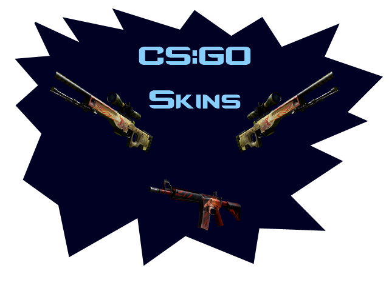

Welcome to our website! Here you'll find (if you're interested) different skins from CS:GO that we ranked from one through five, in each rarity! Please enjoy our website!  (DISCLAIMER: ALL WEAPONS IN THIS WEBSITE ARE FROM A GAME CALLED COUNTER-STRIKE: GLOBAL OFFENSIVE. FOR MORE INFO, PLEASE VISIT THE "ABOUT THE GAME" PAGE.)